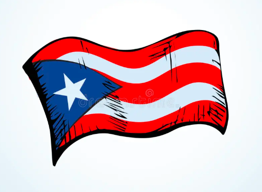

Puerto Rico fue colonizado por España en 1493 tras la llegada de Cristóbal Colón. En 1898 pasó a ser territorio de Estados Unidos. Hoy es un Estado Libre Asociado con una rica cultura influenciada por raíces indígenas, africanas y españolas.
Historia
Símbolos Patrios
Bandera, escudo y el himno "La Borinqueña".

Extensión Territorial
Puerto Rico tiene una extensión aproximada de 9,104 km².
Municipios
- San Juan
- Ponce
- Mayagüez
- Arecibo
- Bayamón
Lugares Turísticos
- El Viejo San Juan
- El Yunque
- Isla de Culebra
- Rincón